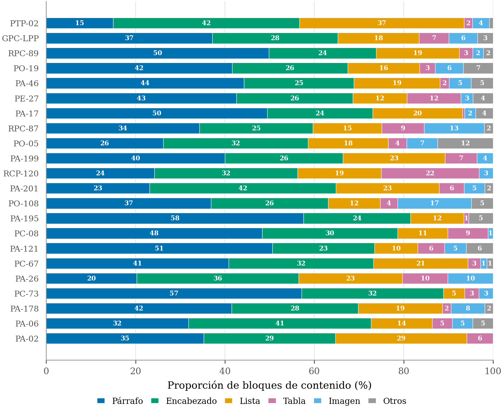
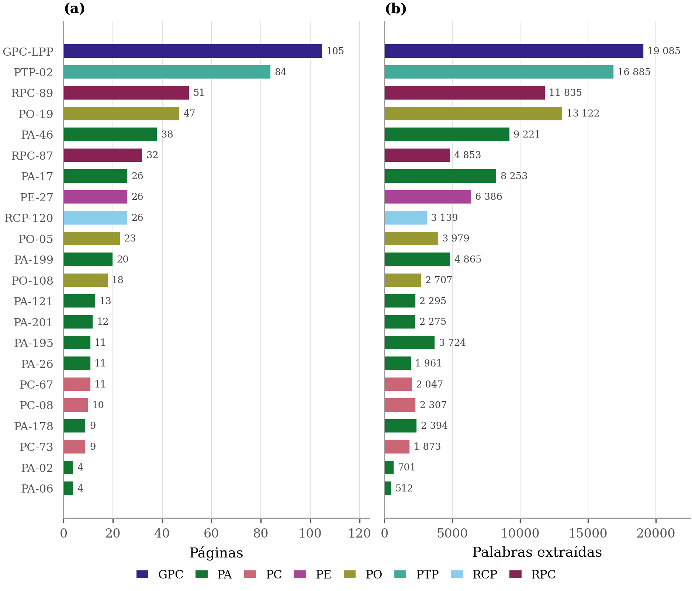
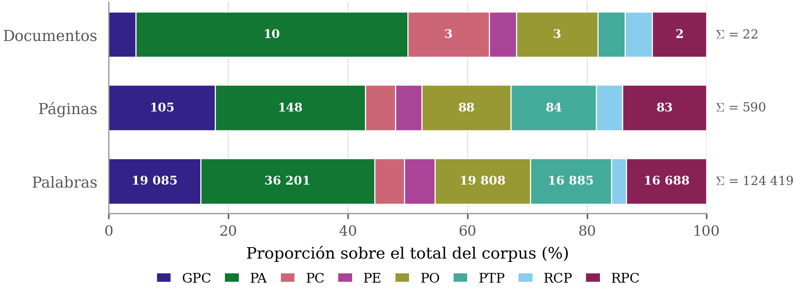
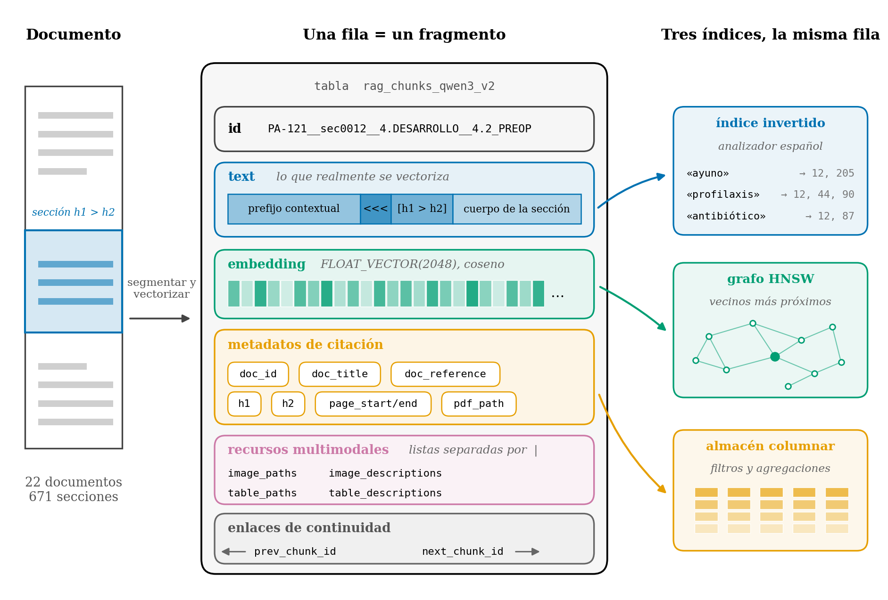

Qué se publica, qué no y por qué. El criterio: todo lo que sostiene una afirmación de la memoria es público; el corpus documental del hospital no se redistribuye porque no es material propio.
Los conjuntos de referencia sí incluyen la frase literal del protocolo que responde a cada pregunta: 615 citas breves con atribución al documento de origen. Sin ellas no sería comprobable que la respuesta esperada es razonable y no está ajustada a posteriori, que es justo lo que hace auditable la evaluación. Son citas de extensión limitada al servicio de la crítica y la investigación, no una reproducción de los documentos.
Los protocolos empleados, por su código interno. Los conjuntos de referencia y los resultados los identifican con estos mismos códigos.
LPPPA-02PA-06PA-121PA-17-PA-178PA-195PA-199PA-201PA-26PA-46PC-08PC-67PC-73PE-27PO-05PO-108PO-19PTPRCP-120RPC-87RPC-89



Quien necesite el corpus o el índice para recalcular las métricas de recuperación desde cero puede solicitarlo; la cesión depende de la autorización del centro titular. También se facilita bajo petición la telemetría en crudo, que sí es material propio.
Solicitudes a mtrullen@unizar.es, indicando qué material y con qué fin.
herramientas/): Apache-2.0.experimentos/,
docs/figuras/): CC BY 4.0.Al citar un resultado conviene fijar la revisión, porque el repositorio puede cambiar:
Repositorio de experimentos del TFM «Asistente clínico RAG sobre protocolos
hospitalarios». Universidad de Zaragoza.
https://github.com/819524/rag-clinico-tfm (revisión <hash-del-commit>)